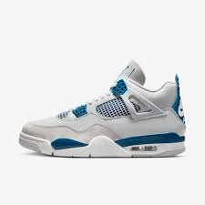
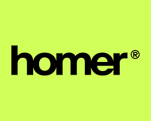

Sobre o Projeto
O hip hop é muito mais que um gênero musical: é um movimento cultural e social que nasceu nas periferias para dar voz às lutas e experiências de comunidades marginalizadas. No Brasil, o hip hop tem desempenhado um papel crucial na conscientização, educação e resistência frente às injustiças sociais.
Esse site tem o foco de aprofundar mais sobre o nosso projeto apresentado, e mais abaixo, tem um botão, onde você pode compartilhar suas letras de hiphop (pode ser de qualquer subgênero), para as outras pessoas verem.
Impacto Social do Hip Hop
- Conscientização: Promove o debate sobre temas como desigualdade, racismo e violência.
- Educação: Artistas oferecem workshops e palestras sobre direitos civis e sociais.
- Ação Comunitária: Mobilizações em torno de causas sociais e campanhas beneficentes.
Subgêneros do Hip Hop
Rap
O rap é um estilo musical que se caracteriza pela rima e pela entrega verbal. Nascido nas comunidades afro-americanas, o rap é uma forma de expressão que aborda questões sociais, políticas e pessoais, sendo uma voz poderosa para a juventude. É um dos subgêneros mais famosos do Hip Hop.
Ouça esta música, como exemplo, do Racionais Mc's:
Street Dance
O street dance é um estilo de dança que se desenvolveu nas ruas e nas festas, incorporando várias influências e estilos, como o breakdance, locking e popping. É uma forma de arte que permite a expressão individual e a criatividade, muitas vezes ligada à música hip hop, principalmente o Rap.
Vídeo de pessoas praticando o Street Dance:
Grafite
O grafite é uma forma de arte urbana que utiliza as paredes das cidades como tela. O grafite é uma maneira de os artistas se expressarem, transmitindo mensagens sociais e políticas através de suas obras coloridas e impactantes.
Imagens de Grafite:


Artistas Influentes
Conheça alguns dos nomes que moldaram o hip hop:
- Internacionais: Tupac Shakur, The Notorious B.I.G., Kendrick Lamar.
- Nacionais: Racionais MC's, Emicida, Djonga.
Linha do Tempo do Hip Hop
1970
Nascimento do hip hop no Bronx, Nova York.
1980
Surgimento dos quatro pilares: DJing, MCing, grafite e breakdance, e o início do movimento no Brasil.
1990
Explosão do rap.
2000
Consolidação global como movimento cultural e musical.
Impactos do Hip Hop na Moda
O hip hop não é apenas um movimento musical; ele também teve um impacto significativo na moda ao longo das décadas. Desde os anos 80, o estilo hip hop influenciou tendências de vestuário, calçados e acessórios, criando uma estética única que continua a moldar a indústria da moda até hoje.
1. Estilo Streetwear
O streetwear, que combina conforto e estilo, é uma das maiores influências do hip hop na moda. Marcas como Supreme, Off-White e A Bathing Ape foram inspiradas pela cultura hip hop e se tornaram ícones no mundo da moda.
2. Calçados
Os tênis se tornaram um símbolo de status e estilo dentro da cultura hip hop. Colaborações entre rappers e marcas de calçados, como Nike e Adidas, resultaram em lançamentos icônicos que são altamente desejados.
Um exemplo dessas parcerias, é o tênis o Air Jordan 4 Retro. Esse tênis foi criado em colaboração com o trapper Travis Scoot
3. Acessórios
Os acessórios, como correntes de ouro, bonés e óculos de sol, são elementos essenciais do estilo hip hop. Esses itens não apenas complementam o visual, mas também transmitem uma mensagem de identidade e cultura.
Um exemplo famoso de relação entre as marcas de acessórios e rappers, é o Frank Ocean, que é dono da marca Homer
4. Inclusão e Diversidade
O hip hop trouxe uma nova perspectiva de inclusão e diversidade para a moda. Designers e marcas estão cada vez mais incorporando influências culturais e estilos de diferentes comunidades, refletindo a rica tapeçaria da cultura hip hop.
O Hip Hop nas olimpíadas
O breaking, elemento fundamental da cultura hip-hop, estreou como modalidade olímpica nos Jogos de Paris 2024. Na competição feminina, a japonesa B-Girl Ami conquistou a medalha de ouro, superando a lituana B-Girl Nicka, enquanto a chinesa B-Girl 671 ficou com o bronze. No masculino, o canadense B-Boy Phil Wizard levou o ouro, vencendo o francês B-Boy Dany Dann, com o americano B-Boy Victor assegurando o bronze.
A competição foi realizada na Place de la Concorde, em Paris, e marcou a primeira e única participação do breaking nos Jogos Olímpicos, já que a modalidade não estará presente em Los Angeles 2028
A entrada do Break Dance nas Olimpíadas, foi um evento muito importante na comunidade do Hip Hop, pois as olímpiadas foram capazes de mostrar a cultura do Hip Hop para mais pessoas no mundo
Aqui está um vídeo da final do breakdance nas olimpíadas:
Envie aqui suas letras de Hip Hop!
Ao clicar no botão abaixo, você poderá enviar um letra de hiphop ao nosso site, e mostrar ela para as outras pessoas!